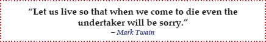
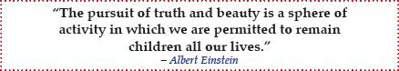

Don’t have any regrets.
Do your best with the opportunities and challenges that come your way. This will bring you inner satisfaction and peace of mind, regardless of the outcome.

Don’t lose your fun and curious inner child.
Children are naturally curious. They see life as a fun adventure where they never stop exploring and learning. Keep your inner child alive; otherwise, you will find the world to be a frightening, disappointing, and lonely place.

I hope that you put into practice what you’ve learned in this book. You’ll soon discover that success is measured not by how much money you’ve accumulated, but rather by whether you have lived to your fullest potential and done your best. Best wishes for success in school and life.
Handpicked web recommendations are available at
http://conciselearning.com/studentsuccessquotes.html.
Handpicked book recommendations are available at
http://conciselearning.com/studyskillsbooks.html.